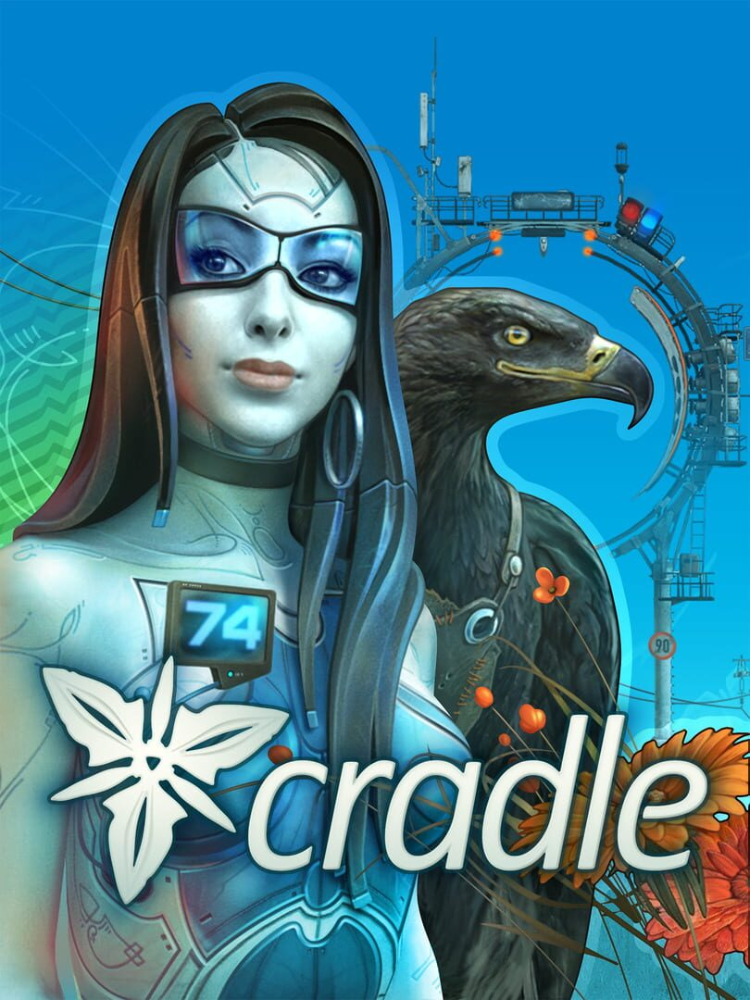

Cradle
Cradle
Details
|  | |
| Playtime | 3h 12m 0s |
| Last Activity | 30/10/2020 5:31:07 |
| Added | 29/10/2020 |
| Modified | Never |
| Completion Status | Not Played |
| Source | Steam |
| Platform | PC |
| Release Date | 24/07/2015 |
| Community Score | 68 |
| Critic Score | 65 |
| User Score | |
| Genre | Adventure Indie |
| Developer | Flying Cafe for Semianimals |
| Publisher | Flying Cafe for Semianimals |
| Feature | Achievements Cloud saves Full Controller Support Single Player Stats Trading Cards |
| Links | PCGamingWiki Community Hub Discussions Guides Achievements Store Page News |
Description
Cradle is a sci-fi first-person-view quest designed for the player to explore the surrounding world. The story is built around the relations of the protagonist and a mechanical girl who by quirk of fate found themselves amidst the desert. The player’s task is to repair the mechanical body of his companion and solve the mystery of the neglected entertainment park located not far from the yurt together.
Thirty years ago in the mid-2040s the sweeping development of neuroscience stirred up the common anticipation of victory over aging and death. In 2047 the scientists of the Neurocopying Institute in Cologne run the first experiments on transferring human consciousness onto an artificial carrier. In the course of experiments a weird previously unregistered phenomenon was discovered - the copies of neurotic system of the test subjects awoken in the computational device began to self-destroy by immersing in a state of deep irrational fear.
The discovery of the mysterious phenomenon induced a string of events to have completely changed the society. Dozens of years later the question of the ‘Panic Attack’ nature still remains open. We do not know how far the researchers’ thought has led them in search of the answer, but we believe it hardly ever visited this Mongolian steppe.
Year 2076, Mongolia. You wake up in a yurt amidst the boundless steppes. You neither remember your name, nor are aware of how long you had slept. Who are you? Who is this mechanical girl sitting on the table and what is the number she has on her chest? Nearby there towers the dome of a neglected entertainment park. How did it appear in these desert lands? What has happened here? Look around and try to sort things out. You are to begin on a peculiar and a touching story.
Key Features
- Open World. Explore the mysterious and stylish world of the robotized Mongolia. Search the yurt, take a stroll down the river or head towards the entertainment park - this game has no fences you cannot overcome.
- Interactive Environment. Interact with objects - all of them bear a part of the story and most can be used in the gameplay.
- Living Characters. Communicate with NPCs. Owing to non-standard emotion display technology where actor eyes video is used, the NPCs in Cradle look as ‘live’ ones.
- Deep Story. Immerse into learning the thoroughly thought-out story. Every of its detail adds to the storyline, while a short newspaper slip accidentally found in the steppe could completely change the sense of the storyline.
- Varied Gameplay. Mix thoughtful exploration quests with bright and dynamic mini-games.
- Excquisite Soundtrack. Engulf the atmoshpere of mystery with the enchanting soundtrack of the game. Cradle contains 90 minutes of music including the meditative ambient, synthetic tracks and vocal compositions.
Storyline
Thirty years ago in the mid-2040s the sweeping development of neuroscience stirred up the common anticipation of victory over aging and death. In 2047 the scientists of the Neurocopying Institute in Cologne run the first experiments on transferring human consciousness onto an artificial carrier. In the course of experiments a weird previously unregistered phenomenon was discovered - the copies of neurotic system of the test subjects awoken in the computational device began to self-destroy by immersing in a state of deep irrational fear.
The discovery of the mysterious phenomenon induced a string of events to have completely changed the society. Dozens of years later the question of the ‘Panic Attack’ nature still remains open. We do not know how far the researchers’ thought has led them in search of the answer, but we believe it hardly ever visited this Mongolian steppe.
Year 2076, Mongolia. You wake up in a yurt amidst the boundless steppes. You neither remember your name, nor are aware of how long you had slept. Who are you? Who is this mechanical girl sitting on the table and what is the number she has on her chest? Nearby there towers the dome of a neglected entertainment park. How did it appear in these desert lands? What has happened here? Look around and try to sort things out. You are to begin on a peculiar and a touching story.